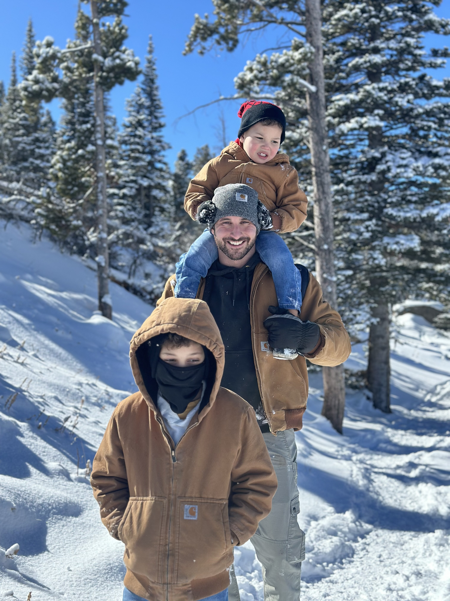
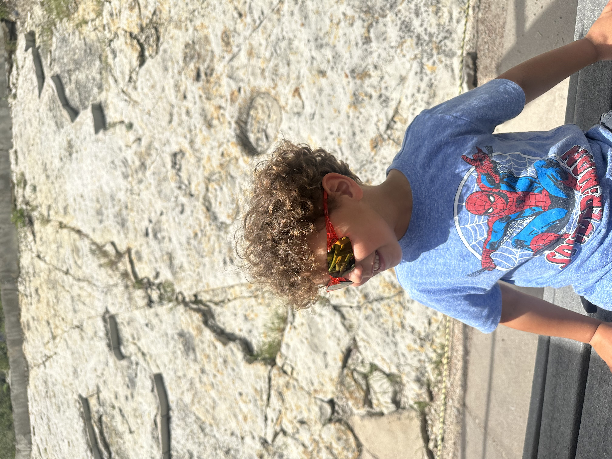
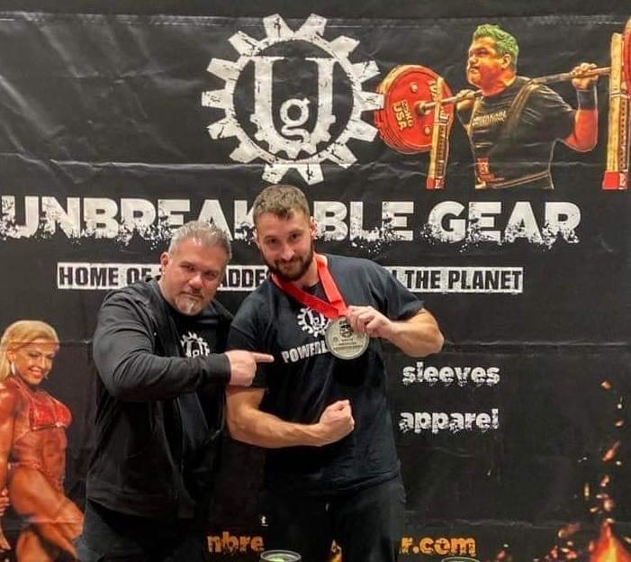
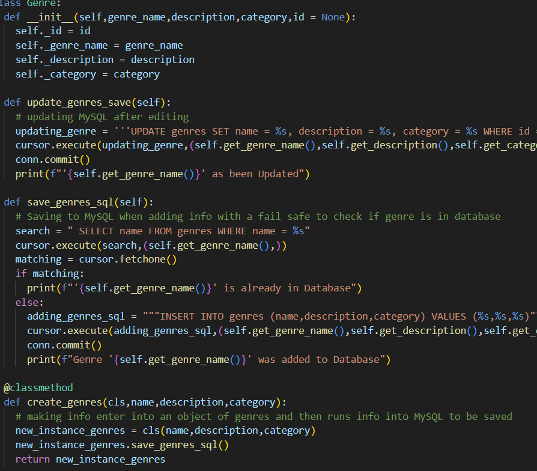

A Personal Introduction
 Hello, and welcome! My name is Daniel Durant, and I am a father of two boys, ages nine and three. Currently, I'm attending school to obtain a certification in software engineering from Coding Temple. By day, I work as a location manager at a local grain elevator, and in my spare time, I compete in competitive power-lifting. Balancing work, school, parenting, and my passion for power-lifting, and coding pushes me to redefine what a full day looks like. Despite the challenges, I remain committed to my dream of becoming a software developer. With my two little ones watching and relying on me, failure is not an option—I'm determined to achieve success in this pursuit. Let me share a bit more about myself and my goals.
Dad Mode: Two Boys, Infinite Adventures
I can proudly say that the most cherished title I hold is 'Dad'. With two incredible boys—one who's 9 years old (already a mini philosopher) and another who's 3 (a tornado of curiosity)—I'm constantly on my toes. Whether we're building LEGO masterpieces or engaging in deep discussions about dinosaurs and the workings of the universe, there's never a dull moment in the Durant household. The best part of my day is returning home to them and embarking on our daily adventures together. Their boundless energy and excitement for anything that pops into their minds serve as a true inspiration. It encourages me to think outside the box and explore what's possible on any given day. I channel that same energy into all aspects of my life. However, as an adult, keeping up with their high energy and insatiable curiosity can be quite challenging! But at the end of the day, when I tuck them into bed and read them a story, and they say, "I love you, Daddy," it melts my heart. Those moments are priceless, and I wouldn't trade them for anything. The memories I create during those times will stay with me for the rest of my life, cherished forever.

- 
Work Zone: Elevating Grains and Challenges
I work as a location manager at a local grain elevator, and for 55 hours each week, I'm knee-deep in grain—literally. As the manager, I oversee operations, troubleshoot issues, and ensure the smooth flow of golden kernels that feed us all. It's a job that combines logistics, teamwork, and a dash of dusty adventure. I've been in this role for almost five years now and have experienced tremendous growth during this time, honing my skills as a leader and team builder. Not a day goes by without learning something new that can be applied to all aspects of life. Customer relations and team building are my favorite parts of this role. I take pride in building strong relationships with both customers and my team, treating them like family and ensuring they feel welcome and cared for in a world that can be harsh and unforgiving. We all want to fit in and feel important, and it starts with me welcoming them with a smile and asking, 'Good morning, how are you doing today? What can I do for you?'!
Iron and Grit: Power-lifting Passion
 When I'm not lifting grain sacks, I'm lifting iron plates. Power-lifting is my escape—a chance to push my limits, both physically and mentally. The barbell becomes my canvas, and each lift tells a story of resilience and determination. I've been competing in power-lifting for three years and working out for most of my life. When I attend a competition, the best part isn't so much the competition itself; it's about meeting new people, engaging in conversations, and getting to know their stories. While winning is enjoyable, the atmosphere and cheering on fellow lifters as they complete lifts they didn't think possible create lasting memories. My mindset during competitions is that it's me against myself—no one else. I give my best effort and leave it all on the table. With this mindset, I've earned two gold medals and two silver medals. One of those silver medals was second place at the North American Power-lifting League's National meet in 2022—the highest achievement I've attained so far. Now, while I balance school and pursue a career change, my competitive drive in the sport has taken a back seat for the time being.
Coding Odyssey: From 0s and 1s to Web Magic
 I am currently pursuing my passion of becoming a software engineer, and I am a student at Coding Temple. Yes, you read that right. After long days at work and intense power-lifting sessions, I dive into the world of code. At Coding Temple, I unravel the mysteries of algorithms, dance with Python, and dream of elegant websites. It's like flexing my brain muscles after flexing my biceps. I've always had a passion for building and designing—whether it's something physical or digital. The abstract thinking and attention to detail needed to solve problems along the way truly captivate me. When it comes to coding, I'd say I enjoy it the most. Seeing your work come to life on the screen is an incredible feeling. Sure, it often involves hours of chasing bugs, but when it's all finished and you step back to admire your masterpiece, that sense of ownership is wonderful. Of course, it comes with challenges—nothing worthwhile is achieved without risk and obstacles. I thrive on good challenges that push me beyond what I thought was possible. That's what I truly love about software development—it's a challenging path not everyone is cut out for, but the only true boundary is what you believe is possible. With enough thought and a supportive team, anything can come to life on your screen!
Career Goals
My goal for a future career is to find a job in tech with a mission that I can get behind and be passionate about. Within that role, I want to grow and learn everything I can while simultaneously helping build and grow the team I am with. I aim to push the boundaries of innovation in software development further than anyone thought possible. Although I'm just starting on this new path, my passion, determination, and attention to detail are unmatched as I learn and follow this into a great career! I am open to working in any sort of software development role as my career progresses. However, my dream role within tech is to work with A.I. and robotics. The idea of creating a program that can have a large impact on humanity with a helping hand is beautiful. But that's not to say I wouldn't enjoy using my skills for web design and working with databases. I've discovered a passion I didn't know I had: Databases, Data Analytics, and Data Analysis. Working with data brings me true joy, and I want to be a part of it in the future. At the end of the day, I want to help people and be an integral part of my team!
Why I Juggle It All
Because life isn't about balance; it's about harmonizing chaos. My boys inspire me to learn, my work fuels my purpose, and power-lifting reminds me that strength isn't just physical—it's mental, too. And coding? Well, that's my canvas for creating digital worlds. So, welcome to my corner of the internet. Here, you'll find a mix of dad jokes, code snippets, and maybe even a meme or two. Stick around—I promise it won't be boring!
Remember: Life's weights may be heavy, but the gains are worth it! 💪